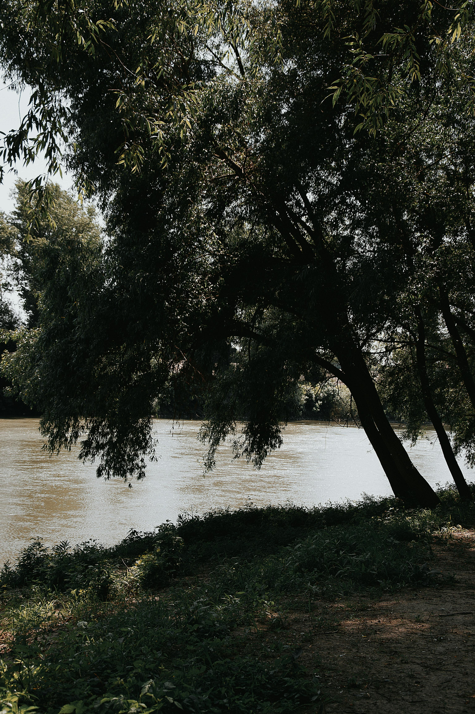

El Jardín de los Susurros
En lo más profundo de un bosque olvidado, un antiguo jardín guarda secretos
milenarios. Mia,
una joven
cartógrafa, y Leo, un niño curioso, se adentran en una aventura llena de magia y misterio: deben
descifrar los susurros de las flores bajo la luna llena, desentrañar los mensajes ocultos en las piedras
y descubrir el propósito real de aquel lugar encantado.
Capitulo 1
En lo más profundo de un bosque olvidado, Mia había pasado semanas recorriendo los pasillos
agrietados de la vieja biblioteca de Arcadia, hasta que un día, entre estanterías repletas de pergaminos
amarillentos, dio con un mapa singular: no era topográfico, sino un plano lleno de símbolos arcanos y,
en el margen, una nota en tinta violeta que susurraba “El Jardín de los Susurros aguarda a quien
descifre su canto”. Al tocar por primera vez la brújula que llevaba colgada al cuello sintió un suave
cosquilleo: la aguja osciló hacia el norte y se quedó clavada, como si aquella pieza fuese la llave para
encontrar aquel lugar misterioso. Al caer la tarde, siguió un sendero cubierto de hojas caídas que la
condujo a un claro donde un niño de mirada vivaz jugaba con una rana; se llamaba Leo y había oído
leyendas de flores que hablaban, pues su hermana moría de una extraña enfermedad que, según decían, solo
la magia del jardín podría curar. Unidos por la curiosidad y la esperanza, siguieron el camino hasta
descubrir una verja de hierro corroído, cubierta de musgo púrpura y grabada con un alfabeto desconocido:
“Sólo la luna desvelará el susurro; quien la entienda, hallará su destino”.

Capitulo 2
Aquella noche montaron un campamento improvisado y, bajo un cielo tachonado de
estrellas,
dibujaron un círculo con tiza blanca, encendieron tres velas formando un triángulo y esperaron paciente
la medianoche. Cuando la luna llena ascendió, un viento helado agitó las flores del jardín, que
comenzaron a mecerse sin brisa visible y emitieron un murmullo armónico: Mia, arrodillada ante un rosal
de pétalos azul zafiro, escuchó “Busca el corazón que late bajo la roca dormida”; Leo, junto a un lirio
dorado, percibió “No todo lo que brilla alumbra la verdad”. Anotaron cada palabra en sus cuadernos y,
antes del amanecer, advirtieron huellas diminutas, como de garras, alrededor del círculo, preguntándose
si un guardián oculto velaba por aquel santuario.
Capitulo 3
Al anochecer siguiente, exploraron aún más y hallaron, bajo un roble centenario, una losa de
piedra a medio enterrarse; tras limpiar la tierra descubrieron en su centro un cristal rojo que
palpitaría como un corazón vivo. Cuando Mia posó la palma sobre él, una oleada de visiones inundó su
mente: jardineros de épocas remotas, poetas recitando versos en lenguas olvidadas y alquimistas
mezclando néctar de flores para proteger aquel terreno mágico. Leo, recordando la advertencia del lirio,
vio cómo una sustancia oscura manchaba los bordes del cristal; al limpiarla, descifró grabados que
alertaban sobre un hechizo de avaricia. Con las dos pistas combinadas, Mia susurró al cristal “¿Qué debo
hacer para honrar este legado?” y entonces resonó el gran susurro: un coro de voces femeninas que
entonaban un canto de gratitud, revelando que aquel poder no debía extraerse jamás, sino compartirse a
través de relatos, mapas y poemas para restaurar el equilibrio del bosque. Al alba, sellaron la losa con
tinta violeta extraída de las flores, cerraron la verja y partieron hacia Arcadia con el corazón colmado
de asombro, dispuestos a convertirse en los nuevos guardianes del Jardín de los Susurros. De vuelta,
publicaron un libro ilustrado con mapas detallados, fotografías de la noche lunar y las crípticas
inscripciones traducidas; aunque pocos creyeron la historia completa, aquellos que escucharon el
murmullo entre las páginas aprendieron a respetar y proteger los bosques cercanos, manteniendo viva la
memoria del jardín en quienes aman la naturaleza y el poder de las palabras.